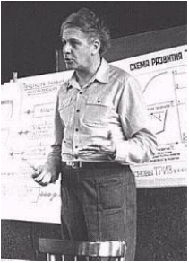
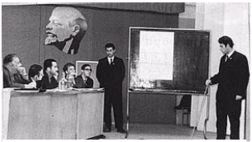
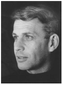
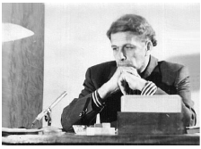

Phụ lục 3: TÔI ĐƯỢC HỌC THẦY GENRIKH SAULOVICH ALTSHULLER
Phan Dũng

Cho đến bây giờ và cả sau này, chắc tôi vẫn nghĩ rằng tôi đến với TRIZ một cách tất yếu và được học Thầy Genrikh Saulovich Altshuller một cách vô cùng may mắn.
Tất yếu hiểu theo nghĩa, nếu tôi không đến với TRIZ như đã xảy ra vào năm 1971 thì nhất định sẽ có lần tôi bắt gặp TRIZ và đi theo TRIZ suốt cuộc đời còn lại của mình.
Tôi nhớ hồi nhỏ, khi mình làm điều gì sai (mặc dù động cơ là tốt hoặc ít ra tự tôi cho như vậy), thường bị người lớn mắng: “Sao dại thế, làm cái gì cũng phải nghĩ trước chứ”. Thú thật, tôi thuộc loại hay tự ái. Tuy không nói ra mồm nhưng trong đầu thì muốn trả lời: “Trước khi làm thì không ai dạy nghĩ cả, chỉ chờ làm sai thì mắng” và thấy phải cố gắng học được cách suy nghĩ.
Khi học phổ thông, cũng như các bạn khác, qua lời thầy cô, qua các quyển sách, tôi rất khâm phục các nhà bác học, sáng chế, các nhà văn, nhà thơ, và cũng ước mơ tự mình có được cái gì đó mới để đóng góp với đất nước, với nhân loại. Trong đầu tôi nảy sinh câu hỏi: “Những người đó nghĩ như thế nào mà ra được những cái tuyệt vời như vậy?” Ngay cả khi giải bài tập chung trên lớp, có những bài tập các bạn khác giải rất nhanh, xung phong lên giải cho cả lớp, tôi lại thắc mắc: “Các bạn đó nghĩ như thế nào mà giải bài tập nhanh thế?”
Các câu hỏi kiểu nói trên càng ngày càng xuất hiện nhiều lần trong tôi, đến mức, gần như hàng ngày. Tôi đem chúng trao đổi với bạn bè, hỏi người lớn nhưng không thấy thỏa mãn, chưa kể có khi chính các câu trả lời lại làm nảy sinh thêm các câu hỏi mới.
Khi học các quy luật trong các môn lý, hóa, sinh tôi lại liên hệ: “Còn trong suy nghĩ có quy luật không?, Tại sao không thấy dạy ở phổ thông hay phải học lên cao nữa?, Tại sao mình không tự tìm hiểu cách nghĩ của chính mình?”
Trong các môn học, đầu tiên tôi chọn môn toán để tự kiểm tra xem mình nghĩ như thế nào khi giải các bài tập. Nhiều lần, sau khi giải xong một bài toán, tôi hồi tưởng lại các bước nghĩ của mình, cố gắng lý giải một cách lôgích quá trình suy nghĩ, kể cả những bài toán mà lời giải bật ra thật bất ngờ, tưởng chừng như sự may mắn giúp đỡ. Không phải tất cả các bài toán tôi đều lý giải được một cách lôgích nhưng lần nào thành công thì thấy rất phấn khởi. Bằng cách tự rút kinh nghiệm, tôi thấy suy nghĩ của mình khá lên đôi chút, từ đó thấy tự tin hơn và yêu thích giải bài tập (không chỉ riêng môn toán) hơn.
Năm 1967, tôi được cử đi học ngành vật lý thực nghiệm ở Liên Xô. Sau năm dự bị học tiếng Nga, tôi vào học tại Đại học tổng hợp quốc gia Azerbaigian, thành phố Baku. Tiếng Nga, các hiệu sách và các thư viện đã tạo thêm điều kiện cho tôi đi tìm câu trả lời cho những câu hỏi lâu nay vẫn cứ ám ảnh mình. Có thời gian rảnh rỗi, tôi đi dạo các hiệu sách tìm mua, vào các thư viện tìm đọc các tài liệu nói về hoặc liên quan đến tư duy. Hiểu biết của tôi tăng lên rõ rệt. Một số cái đọc được tôi áp dụng cho suy nghĩ của mình và thấy kết quả khả quan. Tuy nhiên tôi vẫn muốn biết nhiều hơn nữa, cụ thể và thiết thực hơn nữa.
Tôi cho rằng, thói quen tìm kiếm các sách về tư duy sáng tạo để đọc chắc chắn giúp tôi, trước sau gì cũng đến với TRIZ. Và trong cái tất yếu đó đã xảy ra cái ngẫu nhiên may mắn, không gì thay thế được.
Năm 1971, tôi đang học năm thứ 4. Một lần, thầy dạy môn “Lý thuyết chất rắn” đến muộn. Tôi tranh thủ ngồi tán dóc với mấy bạn sinh viên Liên Xô ngồi cạnh. Mười lăm phút đã trôi qua mà thầy vẫn chưa đến. Tôi lại đem các câu hỏi vẫn thường trực trong đầu ra trao đổi. Anh Anđrei cho tôi biết Hiệp hội các nhà sáng chế và hợp lý hóa Liên Xô vừa thành lập Trường đại học sáng tạo sáng chế (Public Institute of Inventive Creativity), dạy các phương pháp tư duy sáng tạo. Chính anh ấy đang theo học thêm ở đó và thấy rất thú vị. Giống như người khát gặp nước uống, tôi liền nhờ Anđrei sau buổi học ở Trường đại học tổng hợp dẫn tôi theo xin học.
Chúng tôi đi sớm, đến chào Thầy và sau vài câu giới thiệu của Anđrei, tôi vội vàng xổ một tràng dài những gì đã chuẩn bị trước. Chẳng là tôi có nhiều cái lo: trường đã khai giảng được một thời gian mà bây giờ mình mới đến, lỡ đủ chỗ rồi thì sao, lỡ môn này không cho người nước ngoài học thì sao, lỡ… Tóm lại đó là những nỗi lo không được nhận vào học. Thầy lắng nghe chăm chú không ngắt lời và chẳng dè Thầy chỉ nói ngắn gọn làm tiêu tan luôn những câu tôi dự định sẽ trả lời Thầy, nếu Thầy hỏi. Thầy nói: “Nếu anh yêu thích tư duy sáng tạo, xin mời, anh cứ vào học tự nhiên. Tôi nghĩ rằng những gì học ở đây sẽ giúp ích cho anh và đất nước anh hùng của anh. Có gì khó khăn chúng tôi sẽ giúp anh”. Nghe thấy thế tôi sướng bổng người, tưởng chừng như chân không còn chạm đất nữa. Và từ đó, một cuộc đời mới bắt đầu.
Đó là lần đầu tiên tôi gặp Thầy Genrikh Saulovich Altshuller. Tôi cứ nghĩ rằng người dạy sáng tạo chắc phải nhiều tuổi (để có nhiều kinh nghiệm sáng tạo chia sẻ với những người khác) nên khá ngạc nhiên khi gặp Thầy. Thầy trông rất thể thao, rất thanh niên, có lẽ do dáng người cân đối, nhanh nhẹn, cách ăn mặc đơn giản (tôi hầu như chưa bao giờ thấy Thầy đeo cà vạt, kể cả đến bây giờ khi xem các ảnh của Thầy đăng trong các báo, tạp chí và sách), các cử chỉ thoải mái, gần gũi. Thầy có khuôn mặt phúc hậu, đôi mắt thông minh, ấm áp, mái tóc dầy màu hạt dẻ sáng, hơi quăn, bồng bềnh. Phải nói là Thầy khá đẹp trai theo kiểu truyền thống. Sau này tôi mới biết, lúc đó Thầy 45 tuổi và có các patent khi mới 14 tuổi.
Bằng cách nhận thông tin theo đường khác, cùng học khóa đầu (1971 – 1973) với tôi còn có các anh Nguyễn Văn Chân, Nguyễn Văn Thông; khóa hai (1973 – 1975) có các anh Dương Xuân Bảo, Thái Bá Cần và Nguyễn Văn Thọ là những lưu học sinh Việt Nam lúc đó.
Trường đại học sáng tạo sáng chế được thành lập theo sáng kiến của Thầy Altshuller và Thầy cũng là người cấu trúc chương trình, nội dung giảng dạy. Trường có mục đích đào tạo các nhà sáng chế chuyên nghiệp, các nhà nghiên cứu, giảng dạy phương pháp luận sáng tạo (PPLST) và các nhà tổ chức hoạt động sáng tạo sáng chế. Trường còn là nơi thử nghiệm các kết quả nghiên cứu mới về TRIZ và thông qua việc giảng dạy, áp dụng của các học viên, có những phản hồi để hoàn thiện thêm TRIZ. Thời gian học là hai năm. Các môn học chính của trường gồm:

Một bưởi bảo vệ luận án tốt nghiệp tại Học viện công cộng sáng tạo sáng chế
1. Phương pháp luận sáng tạo (gồm TRIZ là chính và các phương pháp của các trường phái khác, kể cả của phương Tây).
2. Môn học phát triển trí tưởng tượng sáng tạo.
3. Tâm lý học sáng tạo.
4. Lý thuyết hệ thống.
5. Lý thuyết thông tin.
6. Điều khiển học.
7. Lý thuyết ra quyết định.
8. Patent học.
9. Các phương pháp dự báo.
10. Lịch sử phát triển khoa học – kỹ thuật.
Môn triết học được xem là đã học ở đại học nên không đưa vào chương trình.
Một số môn học kết thúc bằng làm bài kiểm tra theo kiểu đạt – không đạt, một số môn phải thi lấy điểm. Cuối cùng, để tốt nghiệp, mỗi học viên phải làm luận án và bảo vệ trước Hội đồng khoa học của trường. Có hai loại đề tài luận án: 1) giải một bài toán thực tế đạt mức độ có thể nhận patent (luận án gồm cả tự viết hồ sơ đăng ký sáng chế). 2) nghiên cứu nhằm phát triển tiếp phần nào đó trong PPLST.
Thầy Altshuller trực tiếp dạy hai môn đầu. Đây cũng là hai môn nhiều giờ nhất và phải làm bài tập trên lớp cũng như ở nhà nhiều nhất. Càng học, tôi càng thấm thía lời Thầy Altshuller: “Về lâu dài, giải bài tập sẽ càng quan trọng hơn lý thuyết” và “Học suy nghĩ cũng như học môn thể thao, do vậy, phải chú ý luyện tập thật nhiều để có được các kỹ năng và tác phong cần thiết”.

Như tôi đã nói ở trên, được học trực tiếp Thầy Altshuller là điều may mắn không gì có thể thay thế được. Với thời gian trôi đi, cảm nhận của tôi về sự may mắn đó càng tăng khi càng biết thêm nhiều thông tin về Thầy.
Trước hết, đấy là may mắn được học tác phẩm (TRIZ) trực tiếp từ tác giả. Do vậy, người học không sợ phải tiếp thu những cái “tam sao thất bản”! Bây giờ, khi vào Internet, theo dõi các hoạt động về TRIZ trên thế giới, tôi thấy hiện tượng hiểu lệch lạc, dạy lệch lạc về TRIZ không phải là quá hiếm. Học trực tiếp tác giả, người học có thể hỏi bất kỳ cái gì liên quan đến tác phẩm và được giải đáp tin cậy, kể cả những chuyện “hậu trường”, “bếp núc” để cho ra đời tác phẩm. Nếu bạn chỉ học những thầy là người “đọc trước” hoặc “học trước” bạn, bạn sẽ không có sự may mắn đó.
Tuy nhiên, ở đây có chuyện, tác giả của kiến thức chưa chắc là người có khả năng truyền đạt thông suốt kiến thức đó cho những người khác. Kiến thức là thông tin. Để thông tin truyền thông suốt còn phụ thuộc vào nhiều yếu tố của chính người phát như xử lý, mã hóa thông tin, của môi trường truyền tin, của trình độ người nhận tin. Về mặt này tôi lại có một may mắn nữa: Thầy Altshuller là nhà sư phạm tuyệt vời. Với tư cách là người học, quan sát Thầy tôi thấy, ngôn ngữ Thầy sử dụng rất trong sáng, không phức tạp, không thừa và đánh trúng “đích”, giúp người nghe dễ hiểu đúng nghĩa cần phải hiểu. Thầy luôn sử dụng các hình ảnh, hình vẽ minh họa. Bài giảng của Thầy chặt chẽ, mang tính thuyết phục cao, vì có khá nhiều những chi tiết đắt. Bạn thử so sánh, có hai người mời bạn ăn một món ăn lạ. Một người chỉ nói gọn lỏn: “Món này ngon lắm, bạn ăn đi”. Người kia không dùng từ “ngon lắm”,”ăn đi” mà đi vào chi tiết. Đến nỗi, nghe chưa xong bạn đã ứa nước miếng và tự bạn gắp một miếng cho mình. Rõ ràng bạn bị người thứ hai thuyết phục hơn, thuyết phục đến nỗi thúc đẩy hành động của bạn. Thầy cũng rất linh động trong việc giảng bài hoặc trả lời các câu hỏi tùy theo đối tượng là ai, ở trình độ nào. Thầy có cả “kho” các cách diễn đạt, các ví dụ và các tình huống điển hình lấy từ các lĩnh vực khác nhau cho nên Thầy dễ dàng tạo sự tương hợp cao nhất với người nghe. Chưa kể, Thầy có rất nhiều chuyện vui, giai thoại, chuyện tiếu lâm liên quan đến sáng tạo nên không buổi học nào thiếu vắng tiếng cười trong lớp. Nghe Thầy giảng bài, nhiều lúc tôi có cảm tưởng Thầy không chỉ trình bày TRIZ như một lý thuyết mà được nghe một câu chuyện về quá trình nghiên cứu, xây dựng lý thuyết ấy. Viết đến đây, tôi liên tưởng đến câu nói của L.Tolxtoi: “Điều quý báu cần biết không phải là quả đất tròn mà là làm thế nào để đi đến kết luận ấy”. Phải nói rằng Thầy đã “hút hồn” hầu hết mọi người trong lớp. Thầy là Thầy giáo - Nghệ sỹ. Thầy là hiện thân của cái đẹp, của sự truyền tải cái đẹp nhất, người nhất – sự sáng tạo – đến với những người học Thầy. Có thể vì Thầy còn là nhà văn viết truyện khoa học viễn tưởng được đánh giá cao của Liên Xô.
Qua những câu Thầy trả lời các thắc mắc của tôi trên lớp, trong các giờ ra chơi, trong những lần đến thăm gia đình Thầy tại nhà riêng và đặc biệt trong thời gian làm luận án tốt nghiệp, bản thân tôi cảm thấy mình giàu thêm. Bởi vì, Thầy không chỉ giải đáp những điều tôi muốn biết, muốn hiểu, mà còn gợi mở về sự phát triển tiếp theo mà thường tôi không nhìn xa tới mức như vậy. Đồng thời tôi cũng trở nên nghiêm khắc với chính mình hơn. Chẳng là có những câu tôi hỏi, sau khi trả lời cặn kẽ, Thầy tổng kết: “Những gì tôi trả lời anh có nằm ngoài những gì chúng ta đã học đâu”. Ánh mắt Thầy nhìn tôi như muốn nói thêm: “Anh có đủ tiềm năng để tự trả lời câu hỏi của chính mình kia mà. Trước hết hãy tự mình làm, mạnh dạn lên anh bạn trẻ”. Từ đó, tôi tập thói quen vận dụng những gì mình đã học để tự trả lời các câu hỏi. Không được, mới đi hỏi Thầy, hỏi người khác. Điều này giúp tôi tăng tính tự tin và sau này là tính độc lập trong suy nghĩ, trong nghiên cứu khoa học.
Khi bước vào giai đoạn làm luận án tốt nghiệp, Thầy Altshuller khuyến khích chúng tôi tự tìm đề tài thiết thực với lĩnh vực cụ thể của từng học viên. Biết chuyên môn của tôi là vật lý, Thầy gợi ý làm đề tài theo hướng xây dựng “Chỉ dẫn sử dụng các hiệu ứng vật lý trong sáng tạo sáng chế”. Trong khi đó, cái mà tôi tâm đắc, thậm chí ấp ủ từ lâu lại là đề tài “Tính ì tâm lý trong tư duy sáng tạo”.
Như tôi đã nói ở phần đầu bài viết này: khi còn học phổ thông tôi đã nhiều lần tự tìm hiểu cách suy nghĩ của chính mình khi giải các bài toán trong trường học. Tôi để ý, có những bài toán mình không giải được. Khi biết lời giải tôi thấy mình không giải được không phải vì mình thiếu kiến thức, thiếu khả năng cần thiết mà dường như có một lực nào đó cản trở mình sử dụng kiến thức đó, khả năng đó và rất cay cú về cái lực ấy. Sau này đọc các sách tâm lý học tôi mới biết tên gọi của nó: tính ì tâm lý. Chính vì để ý nhiều đến tính ì tâm lý, bản thân lại vấp nó khá nhiều, có nhiều xúc cảm về nó nên tôi muốn làm theo ý mình hơn là ý Thầy. Tôi phân vân: phải lựa lời nói với Thầy thế nào cho phải đây (vì ở Việt Nam tôi luôn được giáo dục là phải vâng lời thầy, cô). Cuối cùng, tôi quyết định nói thật với Thầy, bởi vì tôi cũng được dạy phải “thật thà, dũng cảm”, có vậy lương tâm tôi mới thanh thản, chẳng cần cong queo làm gì. Tôi chuẩn bị tinh thần, nếu Thầy không chịu thì đành vâng lời Thầy vậy. Khi nói với Thầy, tôi tưởng Thầy sẽ tiếp tục thuyết phục tôi theo ý kiến của Thầy, ai dè Thầy đồng ý ngay: “Nếu anh ”yêu” tính ì tâm lý thì xin mời, bắt đầu ngay đi”. Đồng thời Thầy cũng chỉ ra những khó khăn mà tôi cần phải hình dung trước để vượt qua đối với nhà vật lý khi nhảy sang lĩnh vực tâm lý.
Viết luận án được đến đâu, tôi đưa Thầy xem đến đó. Có thời gian thì Thầy ngồi thảo luận với tôi ngay, không có thì Thầy cầm về đọc rồi hẹn gặp. Thầy góp ý từng phần và luôn đặt nhiều câu hỏi như: “Về ý này người ta đã làm được những gì? Đăng trong tài liệu nào? Anh có thực sự đọc nguyên bản không? Anh đã tìm hết các nguồn thông tin chưa? Mục đích anh muốn đạt được trong luận án là gì? Cái gì là cái mới của anh? Các dữ liệu anh đưa ra đã đủ thuyết phục chưa? Còn dữ liệu nào thuyết phục hơn nữa không? Anh khẳng định cái này liệu có quá sớm không? Còn cách giải thích nào khác không? Còn cách xem xét nào nữa không? Liệu anh có thể xây dựng được các công cụ, ít nhất dưới dạng lời khuyên để giúp người ta khắc phục tính ì tâm lý không? Đề tài này còn có thể phát triển tiếp về những hướng nào?…” Thú thật, mỗi buổi làm việc với Thầy là mỗi buổi “đổ mồ hôi hột” và tôi hiểu thêm Thầy là người rất nghiêm khắc trong công việc nghiên cứu khoa học. Chính vì được Thầy rèn cho, những gì học được từ Thầy đã rất giúp ích tôi khi làm các luận án tiến sỹ (Doctor of Philosophy), đặc biệt, tiến sỹ khoa học (Doctor of Science) về quang học các chất bán dẫn theo nghề nhà nước cử đi đào tạo. Riêng về “tính ì tâm lý”, sau này, tôi phát triển tiếp thành “tính ì hệ thống” báo cáo tại Hội nghị châu Âu về sáng tạo và đổi mới, đăng tại Hà Lan và đưa vào giáo trình giảng dạy của TSK.
Khi đưa Thầy Altshuller xem lại bản thảo lần cuối cùng trước khi chính thức đánh máy và đóng luận án thành quyển, tôi có ghi trên trang đầu: Người hướng dẫn: G.S. Altshuller. Thầy nhìn thấy và lấy bút gạch bỏ. Thấy tôi trố mắt nhìn Thầy ngạc nhiên, Thầy cười và trả lời: “Anh tự chọn đề tài và tự làm chứ không phải tôi. Anh phải tự chịu trách nhiệm”. Câu nói của Thầy thật nhiều nghĩa. Bạn có thể hiểu là Thầy đánh giá luận án thuộc loại xoàng, dính tên mình vào chẳng bõ để tính thêm điểm cho các danh hiệu hoặc học hàm của Thầy, có khi còn mất uy tín. Bạn có thể hiểu là Thầy trung thực vì Thầy cho là Thầy đóng vai trò phản biện, tư vấn hơn là hướng dẫn, hơn nữa Thầy muốn nâng cao tinh thần tự chịu trách nhiệm, tự tạo uy tín khoa học của học trò, không dựa dẫm vào uy tín của người khác. Viết đến đây tôi bất giác nhớ đến chuyện tiếu lâm “Thỏ bảo vệ luận án”. Chuyện kể rằng, trong luận án của mình thỏ đưa ra những kết luận như, thỏ có thể ăn thịt được cáo, chó sói, thậm chí cả gấu. Cuối cùng luận án vẫn được thông qua. Đơn giản vì thầy của thỏ là sư tử.
Nhân đây, tôi muốn nói thêm một chút. Tôi học và làm việc ở Liên Xô trong môi trường giáo dục đại học và nghiên cứu khoa học ba đợt, tổng cộng khoảng 12 năm. Tôi để ý các thầy, các nhà khoa học thường không áp đặt ý tưởng nghiên cứu cho các học trò của mình. Các thầy sẵn sàng thảo luận, tranh luận với các học trò có những ý tưởng khác. Ngay cả trường hợp học trò vẫn không chịu thầy thì thầy cũng không dùng quyền uy để ngăn cấm học trò thực hiện ý tưởng nghiên cứu của học trò. Với nghề vật lý thực nghiệm của tôi, tôi đã khoảng gần chục lần “đụng độ” với các thầy như vậy. Tuy nhiên, sau khi tranh luận, lần nào các thầy cũng bảo, đại loại như: “Mẫu đấy, máy đấy anh cứ thực hiện các thí nghiệm theo ý anh đi xem sao, biết đâu…” Tuy nhiên, các thầy không khoan nhượng và có yêu cầu rất cao đối với quá trình, cách thức thực hiện ý tưởng, kiểm tra các kết quả thu được, xử lý các kết quả, giải thích chúng và dự báo các hệ quả có thể có…
Trong thời gian Thầy Altshuller coi lại lần cuối cùng luận án, tôi vừa mừng vừa lo. Mừng vì vừa hoàn thành một công việc yêu thích. Lo vì, theo yêu cầu, luận án phải nộp dưới dạng đánh máy, mà tiền thuê đánh máy là cả vấn đề đối với học bổng hàng tháng 60 rúp của tôi. Tôi đã dự tính cắt bớt một số khoản chi tiêu.
Hôm đưa lại luận án, đựng trong phong bì lớn cho tôi, Thầy nói: “Anh về vẽ nốt các hình còn thiếu. Chúc anh bảo vệ luận án thành công”. Thầy bắt tay tôi rồi rảo bước đi. Suốt đường về, tôi vẫn chưa hiểu ý Thầy: trong luận án đưa Thầy, mình đã vẽ tất cả các hình rồi kia mà, Thầy bảo vẽ nốt là sao? Bước vào phòng ở ký túc xá, chưa kịp đóng cửa, tôi mở ngay phong bì ra xem: luận án của tôi đã được đánh máy với những chỗ trống được chừa ra để tôi vẽ hình vào đấy. Lần gặp sau, tôi cám ơn Thầy. Thầy cho biết: “Tiện thể có thư ký của Trường đánh một số văn bản, tôi nhờ đánh luôn”. Thầy khuyên tôi nên tự đóng luận án thành quyển, đừng thuê cho tốn tiền vì chỉ có gần 40 trang. Thầy nói “tiện thể” rồi liền sau đó chuyển sang chuyện khác, nhưng tôi hiểu đây là sự “cố ý giúp” và không chỉ một lần theo cái cách ấy. Điều này chứng tỏ những gì, chúng tôi - các sinh viên Việt Nam - nói với Thầy vào giờ giải lao và khi đến thăm gia đình Thầy để trả lời các câu hỏi tỉ mỉ của Thầy về cuộc sống, học tập, học bổng, ăn, ở, ký túc xá… Thầy đều nhớ cả và Thầy sử dụng hoặc tạo ra những dịp để “tiện thể” giúp chúng tôi. Qua các lời nói, cách nói và việc làm của Thầy và vợ Thầy (Cô Valentina Nikolaevna Zhuravliova) chúng tôi cảm nhận rõ sự chăm sóc ấm áp như cha mẹ đối với con cái. Từ dặn dò phải giữ ấm như thế nào để đừng bị cảm lạnh, nên ăn những món gì nhiều, cần đi tham quan những đâu… đến việc thường xuyên mời chúng tôi về nhà Thầy, Cô cho có không khí gia đình và bao giờ cũng vậy, phải ăn với gia đình Thầy một bữa cơm mới được về. Tình cảm đó an ủi chúng tôi rất nhiều vì trong suốt 6 năm học ở Liên Xô, chúng tôi không một lần về phép thăm nhà.
Sau khi bảo vệ luận án tốt nghiệp của cả hai trường (buổi bảo vệ này cách buổi bảo vệ kia một tuần), tôi đến chào gia đình Thầy để về nước. Tôi ghi lại địa chỉ của mình ở Việt Nam và hứa viết thư cho Thầy, Cô. Thầy lấy ra một tập dầy các tờ giấy đánh máy, đưa cho tôi và nói: “Đây là bản thảo quyển sách sẽ ra của tôi. Anh cầm lấy mang về Việt Nam. Sau khi sách in chính thức tôi sẽ gởi thêm theo đường bưu điện. Rủi gởi bị thất lạc thì ít ra anh cũng có bản thảo. Cho chúng tôi gởi lời chúc tốt lành nhất đến gia đình anh. Đất nước anh nhất định sẽ thống nhất hoàn toàn”. Tôi cũng nói thêm là có khả năng một thời gian ngắn sau tôi sẽ quay lại Liên Xô vì được Đại học tổng hợp quốc gia Azerbaigian đề nghị chuyển tiếp làm nghiên cứu sinh. Nhưng theo quy định, trước hết tôi phải về nước đã. Lúc đó là đầu hè năm 1973, Hiệp định Paris được ký kết cách đó chưa lâu. Thầy giữ lời hứa, và để bảo đảm chắc chắn, Thầy gởi qua những sinh viên Việt Nam về nước sau tôi những tài liệu cần thiết.
Mãi đến cuối năm 1982, sau bốn lần hụt đi nghiên cứu sinh vì những lý do quan liêu không đáng có, qua được kỳ thi tuyển khá mệt mỏi về nhiều phương diện, tôi trở lại Liên Xô. Lần này là ở Đại học tổng hợp quốc gia Leningrad (Saint Petersburg ngày nay), cách Baku vài ngàn cây số. Ngày 2.11983 Thầy Altshuller trả lời: “Rất mừng nhận được thư của anh từ Leningrad. Thật tuyệt vời là anh ở đúng Leningrad. Ở đó có các trường TRIZ, nhiều giảng viên và nhiều người nghiên cứu TRIZ. Họ sẽ cho anh biết tình hình và giới thiệu với anh về thành tựu hiện nay cũng như các vấn đề của TRIZ. Tôi thông báo ngay đây các địa chỉ của một số người ở Leningrad”.
Tiếp theo, Thầy liệt kê tên, họ, địa chỉ, số điện thoại của ba người: V.M. Petrov1, E. Zlotina2, V.V. Mitrofanov3 và dặn: “Anh nói với họ rằng tôi giới thiệu anh gặp họ và hôm nay tôi sẽ viết cho Zlotina để báo trước điều đó”. Thầy viết thêm: “Hôm nay tôi sẽ gởi theo đường bưu điện cho anh các quyển sách ‘Sáng tạo như là khoa học chính xác’, ‘Những đôi cánh cho Ikar’ và văn bản mới ‘ARIZ-82B’. Tôi cũng sẽ viết cho những người ở Leningrad để họ cung cấp thêm cho anh các tài liệu khác. Về tạp chí ‘Kỹ thuật và khoa học’4 thế nào rồi? Anh đã kịp đặt cho năm 1983 chưa? Kể cả các số của những năm trước? Anh nhất định phải đọc các số từ 1 đến 9 năm 1981, từ 3 đến 5 và số 8 năm 1982”.
Thầy lại nhắc lại lời đề nghị của hơn 10 năm trước, có tính đến ý thích của tôi khi làm luận án tốt nghiệp ở Baku: “Tôi rất muốn trong thời gian ở Liên Xô lần này, anh làm cái gì đó liên quan đến ‘Chỉ dẫn sử dụng các hiệu ứng vật lý trong sáng tạo sáng chế’. Nếu cần, tạp chí nói trên sẽ đăng các kết quả nghiên cứu của anh. Cũng có thể là các công trình về tâm lý học… Chúc mừng anh nhân dịp năm mới và chúc anh sức khỏe cùng mọi điều may mắn ở Leningrad”.
Đầu tháng 10 năm 1983, tôi xuống Baku với mục đích thăm lại trường cũ, các thầy cô, bạn học và đặc biệt gia đình Thầy Altshuller. Tôi luôn nhớ đến chuyến đi này như một chuyến đi cực kỳ cảm động, thú vị và chắc không thể lặp lại được lần thứ hai vì nhiều lý do mà các bạn có thể đoán ra. Bản thân tôi, sau 10 năm làm việc, áp dụng TRIZ, lập gia đình, có con, va chạm với thực tế, với đời, so với hồi sinh viên đã già dặn hơn nhiều. Gặp Thầy, Cô lần này, các câu chuyện trao đổi trong suốt ngày hôm ấy đi vào chiều sâu hơn, đề cập cả đến những đề tài thuộc loại “tế nhị” theo quan niệm của thời kỳ đó. Tôi biết được nhiều hơn về những “thăng trầm” của cuộc đời Thầy cũng như những dự báo của Thầy về TRIZ. Tôi cũng trình bày những việc đã làm được ở Việt Nam và các ý tưởng phát triển TRIZ của mình. Thầy tỏ ra hết sức ủng hộ, góp nhiều ý kiến, kinh nghiệm quý báu của chính người đã từng trải qua. Chỗ nào không đồng ý với tôi, Thầy chỉ nói: “Có thể như vậy vì anh rõ hơn tôi trong chuyện đó”. Thầy tặng tôi thêm các tài liệu về TRIZ và những vấn đề liên quan gồm các tạp chí, sách, các công trình nghiên cứu mới ở dạng đánh máy.
Thầy tiễn tôi ra bến xe buýt, thấy lưng Thầy bắt đầu còng xuống, dáng đi không còn nhanh nhẹn như trước, tôi thấy thương Thầy vô hạn và mong Thầy luôn mạnh khỏe, sống lâu, thật lâu.
Khác hẳn với lúc đi, chỉ có chiếc túi du lịch nhẹ, tôi bay về lại Leningrad với hành lý, ngoài tiêu chuẩn miễn cước 20 kg còn phải nộp tiền cước quá tải cũng khoảng chừng đó ký nữa, gồm phần lớn là quà tặng của các thầy, cô, bạn học cũ của cả hai Trường. Riêng số tài liệu Thầy Altshuller cho tôi cũng phải hơn 10 kg.
Nhờ Thầy và các đồng nghiệp TRIZ tôi luôn được nhanh chóng cập nhật với những bước phát triển, những nghiên cứu mới về TRIZ (gồm cả những cái sau này mới công bố chính thức dưới dạng các bài báo hay sách). Lần giở các thư Thầy viết, tôi gặp lại những dòng thường xuyên có trong các thư của Thầy như: “Hãy báo cho tôi biết tài liệu này… tài liệu kia… anh đã có chưa để tôi gởi cho anh”. Hoặc là: ”Bưu kiện tôi gởi cho anh hôm nay gồm những tài liệu sau…”.

Ảnh Thầy Altshuller với lời đề ở mặt sau:
“Tặng Phan Dũng - với sự kính trọng và các lời chúc tốt đẹp nhất”.
G.S. Altshuller
31/10/1984”
Có lần, khi đang ở Liên Xô lần thứ ba để làm luận án tiến sĩ khoa học, tôi phát hiện ra hai quyển sách5 trong bưu kiện Thầy gởi. Đây là hai quyển các học trò Thầy viết về TRIZ và hoạt động giảng dạy TRIZ có lời đề tặng Thầy bằng bút mực ngay ở trang đầu tiên. Tôi gọi điện hỏi lại Thầy: “Thưa Thầy, đây là các sách do các tác giả tặng riêng Thầy, chắc Thầy bỏ lộn vào bưu kiện?”. Nghe tiếng Thầy cười: “Không phải bỏ lộn đâu. Anh cần những sách đó hơn tôi”. Thấy tôi im lặng, Thầy đoán tôi đang băn khoăn, lúng túng nên nói thêm: “Anh đừng lo, tôi sẽ nói với họ rằng tôi tặng lại anh. Thôi chúng ta nói sang chuyện khác đi”…
Còn đây là bức thư cuối cùng, ngày 2.21997 của Thầy: “Tôi đã nhận được thư đề ngày 6.11997 cùng báo cáo về chuyến đi dạy Malaysia và các ảnh chụp của anh. Cám ơn anh”.
“Tôi gởi cho anh ‘Bản tin’ của Hiệp hội TRIZ. Tôi rất muốn anh biết tất cả các hoạt động”.
“TRIZ bắt đầu những bước dài ở phương Tây. Người ta thành lập các Viện, Trường, cố gắng dịch các tài liệu về TRIZ. Quyển sách”Và nhà sáng chế đã xuất hiện ngay đây” dịch sang tiếng Anh (ở Mỹ) đã in xong. Nhận được tôi sẽ gởi cho anh. Hãy viết thư thường xuyên hơn cho tôi. Chúc mọi điều tốt lành”.
“Tái bút: Anh đã nhận được hai cuốn sách ‘Làm thế nào trở thành thiên tài’ và ‘Góc công phá’ chưa?”.
Tôi mất liên lạc với Thầy từ đó, mặc dù có viết thêm vài thư nữa cho Thầy. Tôi nghĩ là Thầy lại đổi địa chỉ, như đã có lần xảy ra, khi gia đình Thầy chuyển từ Baku lên sống ở thành phố Petrozavodsk, nhưng… cũng có thể biết đâu… Tôi đã vài lần rùng mình khi nghĩ tiếp đến điều đó. Cuối năm 1998, TSK được nối Internet, thông qua các websites về TRIZ của Mỹ tôi mới biết tin Thầy mất ngày 24.9.1998 sau một thời gian dài lâm bệnh nặng.
Biết tin Thầy mất, tôi vội đánh điện chia buồn với gia đình Thầy. Sau đó, để có thể nói chuyện và ôn lại những kỷ niệm về Thầy nhiều hơn, tôi gọi điện thoại đến Cô Valentina Nhikolaevna – vợ Thầy. Trong buổi nói chuyện ấy, tôi được nghe Cô nhắc đi, nhắc lại vài lần: “Các anh, những sinh viên Việt Nam là những người may mắn vì được học trực tiếp Genrikh Saulovich trong một thời gian dài. Nhiều người làm việc trong lĩnh vực TRIZ không may mắn như thế đâu”.

Trong thâm tâm, tôi luôn hiểu rằng, được học, làm việc trực tiếp và sau này là trao đổi thư từ với Thầy, tôi có được cơ hội hiếm hoi để hoàn thiện chính bản thân mình. Nhiều người cho rằng, một trong những cách học hiệu quả nhất là bắt chước – theo gương người khác một cách tự nguyện – tự nhiên, xuất phát từ nhu cầu, xúc cảm bên trong của người học. Bạn thử quan sát đứa trẻ học nói trong gia đình chẳng hạn. Làm gì có lớp học, thời khóa biểu hay thầy, cô chính thức như cách hiểu thông thường. Đứa bé sống, chơi đùa, giao tiếp một cách tự nhiên, không ý thức về việc “học”, vậy mà học nói rất nhanh, tiến bộ từng ngày. Hoặc nếu bạn được sống cùng với người làm bạn kính trọng, cảm phục, yêu mến và người đó hơn bạn về nhiều phương diện, bạn sẽ học được rất nhiều từ người đó theo kiểu “lây nhiễm” (hiểu theo nghĩa tốt đẹp), mặc dù chính người đó không cố ý dạy và bạn cũng không cố ý học. Cách học “tự nhiên” này hiệu quả ở chỗ, những gì bạn học được thực sự tiêu hóa và trở thành máu thịt của bạn, tác phong của bạn.
Hồi tưởng lại những gì biết về Thầy (một cách trực tiếp, thông qua các bạn TRIZ và hồi ký của các đồng nghiệp khác), tôi thường có ý nghĩ rằng Thầy vừa có thật, vừa không có thật. Thầy có thật như là một người trần gian bằng xương, bằng thịt mà tôi được học. Và không có thật như là một nhân vật huyền thoại bước ra từ trang sách viết về các danh nhân. Chẳng là, tôi đã đọc khá nhiều chuyện kể về cuộc đời của các danh nhân. Nhiều người trong số họ bị môi trường (hiểu theo nghĩa rộng) cản phá, thậm chí vùi dập, nhưng với những nỗ lực phi thường và kiên trì chân lý để cuối cùng họ có được những đóng góp lớn vào sự phát triển, được nhân loại đời đời ghi nhận. Đọc thì đọc thế, biết thế nhưng trước khi gặp Thầy Altshuller, tôi không có may mắn gặp, học và làm việc trực tiếp với những người như vậy.
Cuộc đời Thầy, có thể nói, đã gặp khó khăn ngay từ trong bụng mẹ. Cha, mẹ Thầy quen và yêu nhau khi cùng làm việc tại Hãng thông tấn nước Cộng hòa Azerbaigian (một trong 15 nước Cộng hòa thuộc Liên Xô trước đây), ở Baku. Cha Thầy đã có một đời vợ nên khi xin cưới, gia đình bên mẹ Thầy phản đối quyết liệt. Cha, mẹ Thầy phải lánh sang thành phố Tashkent, thủ đô nước Cộng hòa Uzbekistan và sinh Thầy ở đó ngày 15.10.1926. Năm 1928, gia đình Thầy chuyển lại về sống và làm việc ở Baku trong sự không hài lòng của những người thân bên gia đình mẹ.
Cha, mẹ Thầy làm việc trong lĩnh vực báo chí, nhà có rất nhiều sách đã giúp Thầy có được sự say mê đọc sách ngay từ khi còn nhỏ. Ở trường, Thầy được học với nhiều thầy, cô chuyên nghiệp, yêu nghề và tận tụy với học sinh. Những điều này giúp Thầy sớm hướng đến những cái mới, khám phá và làm ra những cái mới. Thầy nhận được patent đầu tiên khi còn là học sinh phổ thông.
Phát xít Đức tấn công Liên Xô năm 1941, khi Thầy 15 tuổi. Tốt nghiệp phổ thông, Thầy gia nhập quân đội và được phân về một trung đoàn bộ binh. Từ đó, người ta cử Thầy đi học Trường không quân. Học xong (năm 1945) cũng là lúc chiến tranh kết thúc, Thầy xin chuyển về làm việc tại Ban patent thuộc hạm đội Caspian, đóng ở Baku. Chính tại đây, sự thích thú công việc sáng chế từ nhỏ cộng với yêu cầu công việc: theo dõi thông tin patent, thẩm định các sáng chế, góp ý kiến vào các giải pháp của các nhà sáng chế… Năm 1946, Thầy bắt đầu nung nấu ý định xây dựng lý thuyết giải các bài toán sáng chế (TRIZ) giúp ích cho mọi người sáng tạo theo phương pháp khoa học, thay cho mục đích ban đầu: làm sao bản thân mình nhận được nhiều patent.
Năm 1949, nhân tìm ra công thức một loại thuốc nổ cực mạnh, Thầy cùng với bạn là ông R. Shapiro viết thư thẳng cho Stalin. Thư viết trong nửa năm trời, dài 30 trang. Ngoài việc trình bày tóm tắt sáng chế của mình, trong thư còn có nhiều kiến nghị cải cách hệ thống patent và các hoạt động sáng tạo sáng chế của Liên Xô. Do sự “hiểu lầm”, hai người bị vu cáo là có âm mưu đánh bom Quảng trường đỏ, bị bắt năm 1950, bị xử tù và lao động khổ sai 25 năm, đày đi vùng băng giá Vorkuta khai thác than. Trong thời gian ở “trại”, cha Thầy mất. Mẹ Thầy sau nhiều lần gõ cửa, gởi đơn xin ân xá cho con mình nhưng không được, đã tự tử vào năm 1953 vì quá đau khổ. Cùng năm đó Stalin chết, người ta bắt đầu xem xét lại các bản án. Năm 1954, Thầy và ông Shapiro được trả tự do, được khôi phục lại danh dự. Trở về Baku, Thầy phải đổi rất nhiều chỗ làm việc, vì muốn hay không muốn, “kẻ đã từng ở tù” vẫn là kẻ không được hoan nghênh khi xin việc. Cuối cùng, Thầy quyết định làm nghề “tự do”: viết báo và sau đó là sách, sống nhờ vào tiền nhuận bút để có thời gian được làm công việc yêu thích đề ra từ năm 1946. Nhiều lần, nhuận bút không đủ sống, Thầy phải mang bán những quyển sách sưu tầm từ nhiều năm mà Thầy quý như con cho các cửa hàng mua bán sách cũ.
Những kết quả nghiên cứu đầu tiên, đặt nền móng cho TRIZ, Thầy và ông Shapiro công bố trên tạp chí “Các vấn đề tâm lý học” (số 6, năm 1956, trang 37 – 49). Sau này, ông Shapiro di cư sang Israel, chỉ còn mình Thầy Altshuller tiếp tục các công việc liên quan đến TRIZ. Từ năm 1958, Thầy bắt đầu phổ biến TRIZ thông qua các seminar, trước hết ở Baku, sau đó là ở các thành phố khác như Matscơva, Đonhetsk, Tambov, Ryazan… Trên cơ sở kết quả của những seminar này, suốt 9 năm trời, từ 1959 đến hết 1967 Thầy liên tục viết thư cho Hội đồng trung ương của Hiệp hội toàn liên bang các nhà sáng chế và hợp lý hóa Liên Xô (viết tắt theo tiếng Nga là VOIR) với nhiều kiến nghị nhưng không nhận được phản ứng tích cực nào, mặc dù những kiến nghị đó thuộc chức năng hoạt động của VOIR. Chỉ đến năm 1968, chủ tịch Hội đồng trung ương VOIR là Ivanov bị bệnh nặng, thư ký Hội đồng V.N. Tiurin tạm thời thay thế, tình hình mới trở nên sáng sủa hơn: Phòng thí nghiệm các phương pháp sáng chế (OLMI) được thành lập năm 1968 và Học viện công cộng về sáng tạo sáng chế (AzOIIT) – năm 1971 tại Baku. Năm 1972, Sofonov – chủ tịch mới được bầu của Hội đồng trung ương VOIR lại tiếp tục chính sách cũ, gây nhiều khó khăn cho các hoạt động của Thầy Altshuller. Đỉnh cao của sự căng thẳng xảy ra vào năm 1974. Viện cớ Thầy Altshuller có nhận một số cán bộ của Trường nâng cao trình độ quản lý trực thuộc Hội đồng bộ trưởng Ba Lan sang Baku học mà không thông qua Hội đồng trung ương VOIR, Sofonov ra quyết định đóng cửa OLMI. Để phản đối, Thầy Altshuller rút khỏi AzOIIT.
Từ đó, các hoạt động nghiên cứu, phổ biến TRIZ được thực hiện hoàn toàn dựa trên sự ham thích, say mê của những người tự nguyện (theo kiểu “ăn cơm nhà vác tù và hàng tổng”) dưới sự dẫn dắt của Thầy Altshuller mà không có sự đầu tư chính thức nào của nhà nước, các đoàn thể cũng như các tổ chức xã hội. Thầy cùng các học trò của mình thực hiện các buổi dạy TRIZ theo kiểu “du mục” từ thành phố này sang thành phố khác rồi tiến tới thành lập các nhóm, các Trung tâm, Trường đặt nhờ trong các Câu lạc bộ, các Nhà văn hóa… Đến những năm 1980, hàng trăm thành phố của Liên Xô có được những địa điểm như vậy. Từ chỗ chỉ có một mình Thầy dạy TRIZ vào những năm 1950, 3 người – năm 1968 đến hơn 200 người – năm 1979. Tiếp đó là các Hội nghị khoa học chuyên về TRIZ được tổ chức vào các năm 1980, 1982, 1985, 1987, 1988… với số lượng người tham gia ngày càng đông. Hiệp hội TRIZ (TRIZ Association) được thành lập năm 1989 và Tạp chí TRIZ (Journal of TRIZ) – năm 1990. Sự lớn mạnh của phong trào TRIZ buộc VOIR và Ủy ban nhà nước về sáng chế (GOSKOMIZOBRETENIE) năm 1988 ra quyết định ủng hộ việc tổ chức hệ thống giảng dạy các phương pháp sáng tạo sáng chế (một việc làm mà theo Thầy Altshuller chậm mất 20 năm).
Cùng với việc chiến tranh lạnh kết thúc, Liên Xô chuyển sang kinh tế thị trường, sự phát triển TRIZ gặp những khó khăn và thuận lợi mới. Nhờ giao lưu giữa Đông và Tây thông suốt hơn trước, các nước tư bản phát triển đã phát hiện ra TRIZ và tiến hành du nhập TRIZ vào đất nước họ (xem thêm bài “Thầy Genrikh Saulovich Altshuller: Tiểu sử và sự nghiệp” trong Phụ lục 1). Ngày nay phong trào TRIZ trở thành phong trào quốc tế và thuật ngữ TRIZ – thuật ngữ quốc tế. Thật vô cùng đáng tiếc, đúng vào thời điểm bước ngoặt như vậy Thầy Altshuller đã vĩnh viễn ra đi ngày 24.09.1998 để lại bao thương tiếc. Ít ra, có một điều an ủi, Thầy đã chứng kiến được đứa con TRIZ của mình được công nhận ở phạm vi quốc tế như thế nào.
“Có bột mới gột nên hồ
Tay không dựng nổi cơ đồ mới ngoan”
Có thể nói, Thầy Altshuller đã làm nên sự nghiệp rất mới từ tay không, trong những điều kiện hết sức khó khăn. Thử tưởng tượng, Liên Xô trước đây chưa đi theo kinh tế thị trường. Nền kinh tế chỉ có hai thành phần: quốc doanh và tập thể, được điều hành theo kiểu kế hoạch hóa cứng nhắc, chỉ huy từ trung ương. Các nghiên cứu khoa học, kỹ thuật đều tập trung tại các viện, trường thuộc nhà nước. Trong khi đó, Thầy lại là người chẳng có “biên chế” ở đâu cả, chẳng ai cho “kinh phí” để hoạt động và muốn xin cũng không có chỗ để xin. Vì không thuộc diện “biên chế”, mặc dù được nhiều nước mời Thầy tham dự và đọc báo cáo tại các hội nghị khoa học quốc tế, theo luật Liên Xô lúc đó, Thầy không được cấp hộ chiếu. Thời cải tổ (perestroika), việc đi nước ngoài trở nên dễ dàng hơn thì sức khỏe của Thầy lại không cho phép. Cho đến lúc mất, Thầy chưa một lần được “xuất ngoại”, kể cả sang các nước xã hội chủ nghĩa bè bạn. Khó khăn còn lớn nữa, ngoài chuyện “kinh phí”, khi Thầy mở ra một hướng nghiên cứu mới mà bản thân mình lại không có học vị khoa học tối thiểu: Kandidat Nauk (Ph.D). Thầy, dưới con mắt của phần lớn những nhà khoa học làm trong các viện và trường, chỉ là người “ngoại đạo”, chưa đủ tư cách khoa học để phát biểu về các vấn đề chuyên môn. Ngoài ra, còn nhiều những phân biệt đối xử tế nhị khác như gốc Do Thái của Thầy.
Suy nghĩ về sự nghiệp của Thầy, chủ quan tôi cho rằng, ít nhất, có những nguyên nhân sau để Thầy kiên trì hành động theo hướng lý tưởng mà Thầy tìm ra:
- Victor Hugo viết: “Có một thứ mạnh hơn tất cả các đạo quân trên thế giới. Đó là ý tưởng mà thời đại của ý tưởng đó đã đến” (There is one thing stronger than all the armies of the world. And that is an idea whose time has come).
Phải chăng Thầy đã thấy trước “thời đại của ý tưởng” ấy nên Thầy trở nên mạnh và ngày càng được nhiều người ủng hộ, đi theo Thầy trong phạm vi quốc gia và quốc tế. Sau này, từ những năm 1990 càng ngày, càng có nhiều nhà nghiên cứu nói về thời đại sáng tạo tiếp sau thời đại tin học.
Không dừng ở mức độ ý tưởng, Thầy là người hành động, người thực hiện để đưa ý tưởng vào cuộc sống, tiến tới “đổi mới hoàn toàn” (full innovation) bằng chính những luận điểm giải quyết vấn đề do mình tìm ra như “hệ phải thay đổi ít nhất”, phải tiến tới “hệ lý tưởng” (“tự mình” chứ không lập “hệ mới” ngay), phải “tận dụng các nguồn dự trữ có sẵn trong hệ”, đặc biệt “các nguồn dự trữ không mất tiền”, phải tìm và giải quyết mâu thuẫn cốt lõi là “những mâu thuẫn vật lý”, luôn hướng đến “kết quả lý tưởng cuối cùng giới hạn” nhưng cũng rất linh động, không cầu toàn…
Những hành động của Thầy xuất phát và được thúc đẩy bởi tình cảm lớn: tình yêu nhân loại đến từng người một. Thầy thường nói, đại ý: “Sáng tạo có thể và cần phải khoa học hóa. Khoa học sáng tạo sẽ là khoa học chính xác, có thể dạy và học được để mỗi người bình thường (kể cả các bà nội trợ) có thể sáng tạo một cách khoa học, có phương pháp”. Những người biết Thầy đều khâm phục sức làm việc của Thầy. Có người cho rằng, Thầy làm việc tương đương với một viện nghiên cứu. Những sách về sáng tạo và các truyện khoa học viễn tưởng đã in của Thầy chỉ là phần nổi của tảng băng công việc Thầy đã làm. Để hình dung sức làm việc của Thầy, dưới đây xin đơn cử một việc không lớn: Thầy đọc và viết thư. Từ năm 1974 đến 1986, Thầy cộng tác với báo “Sự thật thiếu nhi” mở chuyên mục “Sáng chế? Thật phức tạp! Thật đơn giản!” nhằm đưa TRIZ đến với thế hệ trẻ. Sau những số đầu tiên phát hành, Thầy nhận được khoảng vài trăm thư phản hồi. Về sau, số lượng thư tăng dần và đạt mức 6 đến 8 ngàn lá thư gởi đến Thầy cho mỗi số báo ra. Riêng số thư Thầy đọc liên quan đến một công việc này thôi đã khoảng 220.000. Để lãnh đạo phong trào TRIZ, Thầy phải viết ít nhất 20 lá thư mỗi ngày cho các học trò của mình ở những thành phố khác. Tình cảm lớn, có lẽ, còn giúp Thầy vượt qua mọi cản phá một cách bình tĩnh và những nỗi đau riêng. Cha Thầy mất, mẹ Thầy tự tử khi Thầy bị giam trong trại tù khổ sai. Sau này, năm 1985 con trai duy nhất của Thầy, Evghênhi (mà chúng tôi thường gọi thân mật là Giênhia, kém tôi khoảng 10 tuổi) chết một cách oan uổng do sai sót của bệnh viện khi mổ ruột thừa, để lại cho vợ chồng Thầy đứa cháu nội gái Yuna mới sinh.
Ngoài ra để thành công, cần phải kể đến những may mắn của Thầy như Thầy có cô Valentina Nhikolaevna6, người vợ chung thủy, người bạn cùng lý tưởng đã sẻ chia, giúp đỡ Thầy và những người bạn, những người học trò, những người ủng hộ Thầy… Những may mắn thuộc về đời thường, nhưng không phải ai cũng có được.
“Không thầy đố mày làm nên”. Mỗi chúng ta đều có và biết ơn những người thầy (hiểu theo nghĩa rộng) đã giúp mình nên người. Tôi có nhiều thầy, cô như thế. Tuy nhiên, công bằng mà nói, Thầy Altshuller để lại trong tôi những dấu ấn sâu đậm nhất. Tôi đã may mắn được học Thầy.
Các bạn có thể hỏi: “Đây là ‘được học’ còn ‘học được’ thì sao?” Tôi xin trả lời: “Tôi chỉ mới ‘học được’ một phần rất nhỏ của Thầy Atlshuller. Nhỏ nhưng mà lớn đối với tôi vì cái học được từ Thầy đã thay đổi cuộc đời tôi một cách căn bản so với khi tôi chưa được may mắn học Thầy”
V.M. Petrov đầu những năm 1990 di cư sang Israel. Hiện nay là chủ tịch Hiệp hội TRIZ - Israel (Association TRIZ - Israel).↩︎
E. Zlotina đầu những năm 1990 di cư sang Israel. Mất ngày 8.12.1998 vì bệnh ung thư.↩︎
V.V. Mitrofanov lúc đó là hiệu trưởng Đại học nhân dân sáng tạo khoa học - kỹ thuật Leningrad và hiện nay là Chủ tịch Đoàn chủ tịch Hiệp hội TRIZ quốc tế có trụ sở đóng tại Saint Petersburg.↩︎
Tạp chí ‘Kỹ thuật và khoa học’ được thành lập từ năm 1894, ra hàng tháng, xuất bản tại Mascơva, chuyên về khoa học, kỹ thuật và sản xuất. Thời kỳ chính quyền xô viết, tạp chí trực thuộc Hội đồng liên bang các hiệp hội khoa học - kỹ thuật.↩︎
Đó là hai quyển sách: . V.V. Mitrofanov và T.A. Emeliantseva. ‘Đào tạo các nhà sáng chế và hợp lý hóa tại Đại học nhân dân sáng tạo khoa học - kỹ thuật’. Leningrad, 1987.; . G.I. Ivanov. ‘… Và hãy bắt đầu sáng chế’. Nhà xuất bản Đông Xibiri, Irkutsk, 1987. BTSK số 3/1999, trang 16 có tóm tắt chuyến đi dạy TRIZ của G.I. Ivanov tại thành phố Cáp Nhĩ Tân, Trung Quốc.↩︎
Cô Valentina Nhikolaevna Zhuravliova – vợ Thầy Altshuller đã từ trần cũng tại thành phố Petrozavodsk, Liên bang Nga ngày 12/3/2004, thọ 71 tuổi. Sau khi Thầy Altshuller mất năm 1998, Cô dành toàn bộ thời gian còn lại của cuộc đời mình cho việc thu thập, hệ thống hóa lại và xuất bản các tư liệu, tài liệu và tác phẩm của Thầy Altshuller.↩︎